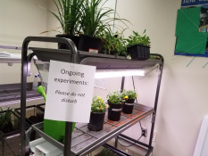

Advanced Manufacturig
In this Program, taught by lupe Verdin, students learn skills in the engineering industry. Students work towards two different certifications. The first in 3D design through SolidWorks and the second in manufacturing through MSSC.
If you have any questions, contact Mrs. Verdin at:
Verdin.Lupe@brevardschools.org
Automotive

In this program, taught by Michael Broud, Students learn basic skills in the auto mechanics industry and work towards a safety certification. This program has six levels, with each teaching students the ins-and-outs of vehicles such as changing tires and oil.
If you have any questions, contact Mr. Broud at:
Broud.Michael@Brevardschools.org
Buisness Software

In this program, taught by Betty Payne, students work towards their Microsoft office certifications. These classes teach students how to use many functions within Word, Powerpoint, and Excel. While the Medical Office class also gives the students the opportunity to earn these certifications, this class also has its students learn skills important to the business side of the world.
If you have any questions, contact Ms. Payne at:
Payne-craig.Betty@brevardschools.org
Digital Media
In this Program, Taught by Steven Stengle, Students learn how to use Adobe software and earn certifications. Students work towards Photoshop and illustrator certifications as well as, a Microsoft access certification.
If you have any questions, contact Mr. Stengle at:
Stengle.Steven@Brevardschools.org
Enviromental Water Technology

In this program, taught by Blake Vahlsing, Students learn about various technologies and programs involved with water treatment. The class also has the students involved with many hands-on projects and activities ranging from plumbing to marine life.
If you have any questions, contact Mr. Vahlsing at:
Vahlsing.Blake@Brevardschools.org
Food Science

In this program, taught by Nathan Burch, students learn about food. Students who complete this course will learn skills in food prep and service, as well as food safety and nutrition. Although fast food and restaurants are highly demanded jobs, they also require considerable knowledge to keep customers happy and prevent illnesses.
If you have any questions, contact Mr. Burch at:
Burch.Nathan@Brevardschools.org
Health Sciences

In this program, taught by Enrique Luna, students learn about the human body and many of its functions. Over the course, students work towards their CMAA certification. This class has students learn skills that will help in getting jobs as medical assistants and physical therapists.
If you have any questions, contact Mr. Luna at:
Luna.Enrique@Brevardschools.org
Medical Office

In this program, taught by Patricia Trotman, students work towards their Microsoft office certifications. These classes teach students how to use many functions within Word, Powerpoint, and Excel. While the Business software program also offers access to Microsoft office certifications, this class leans more towards the administrative tasks in the medical field.
If you have any questions, contact Mrs. Trotman at:
Trotman.Patrica@Brevardschools.org
Technical Design
In this program, taught by Diane Pallo, Students learn how to create objects from 2D objects. These students use programs like Innovator and AutoCAD to bring their ideas to life.
If you have any questions, contact Ms. Pallo at:
Pallo.Diane@Brevardschools.org
Student Projects
Students at HHS have taken on their own projects in the CTE programs including:
~Drones in manufacturing
~Water plant management in enviromental water managment
~Film contest in digital media